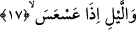
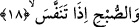

Gizlenmeleri, ruh güneşi ile kalp kamerinin ışıklarının kendilerine baskın gelmesinden
dolayıdır. Bu beş yıldız; Zühre, Utarit, Müşteri, Merih ve Zühal isimli yıldızlardır.
Bunlar beş havassın mezâhiridir. Güneş ruhun, ay ise kalbin zuhûr ettiği semboldür.
17. Kararmaya yüz tuttuğunda geceye andolsun,
Âyet-i kerimedeki “el-leyl/gece” kelimesi, daha önce geçen “el-hunnes” kelimesi
üzerine atfedilmiştir. Âyetteki “as’as” fiili, zıt anlamlı fiillerdendir. Biz; “karanlığı
çekilirken geceye andolsun” şeklinde mânâ verdik. Çünkü -el-Vâsit’ta ifâde edildiği
üzere- sabahın gelmesi, gecenin karanlığının çekilmesiyle olur. Sabahın aydınlanması
gecenin karanlığının çekilmesine bitişik olduğu için “as’as” fiilinin “karanlığın
çekilmesi” şeklinde anlaşılması daha uygun düşer. Ta ki dış âlemde gerçekten gecenin
karanlığını sabahın aydınlığı izlediği gibi, âyetin ifâdesinde de buna uygun olarak
gecenin karanlığını sabahın aydınlığı takip etsin.
Âyetteki “as’as” fiilini “karanlığın çökmesi” şeklinde de tefsir etmemiz mümkündür.
Çünkü bu fiil -az önce işâret ettiğimiz üzere- zıt anlamlı fiillerdendir. Dolayısıyla bu
son açıklamaya göre “as’as” gecenin başlangıç saatini ifâde etmiş olur. Bu mânâ bir
sonraki âyette “sabahın başlangıcı”ndan söz edildiği için buna mukabil olarak “gecenin
başlangıcı”ndan söz edilmiş olması, “mukabeleyi gözetme” bakımından daha uygundur.
18. Ağarmaya başladığında sabaha andolsun ki,
Âyet-i kerimedeki “subh” kelimesi de aynı şekilde yukardaki “leyl” kelimesi üzerine
atfedilmiştir. “İzâ” kelimesinin âmili ise kasemin mânâsıdır. İzâ ve onu izleyen cümle,
hâl makamındadır. Şu halde; Allah Teâlâ karanlığı çekilirken geceye ve ağarırken
sabaha yemin etmektedir.
Bu âyet-i kerimede sabah için “teneffese” fiili kullanılıyor. Aslında “teneffese” fiili
“nefes aldı, solunum yaptı” demektir. Sabahın nefes alması ise doğması ve onun ışığı ile
ortalığın aydınlanması demektir. Bu aydınlanma öyle bir biçimde gerçekleşir ki sonunda
meydana gelen toz bulutu hâlindeki karanlık açılır ve aydınlanır.
Teneffese fiilinin kökünde bulunan “nefes” aslında insanın kalbini rahatlatan ve
üzerine esmesiyle insanı feraha kavuşturan özel bir esintinin adıdır. Nitekim bir hadis-i
şerifte şöyle görüyoruz: “Rüzgara sövmeyiniz. Çünkü rüzgar Rahman’ın
nefesindendir.” [34] Bu şu demektir: Rüzgara sövmeyin. Çünkü rüzgar, insandaki
sıkıntıları ortadan kaldıran Rahman’ın nefesindendir. Şu halde bu ifâdede sabahın